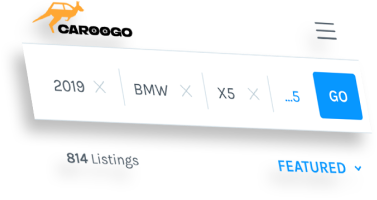
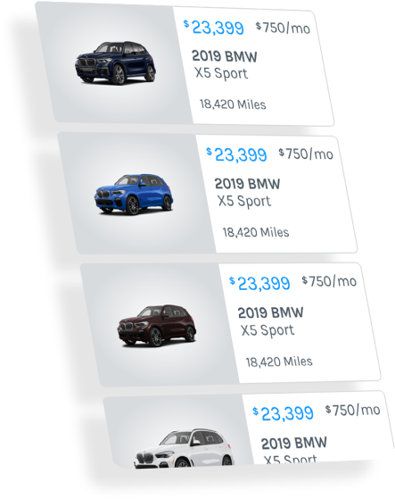
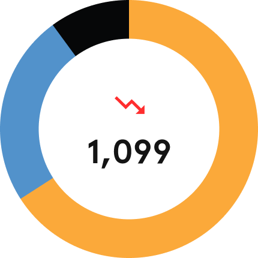
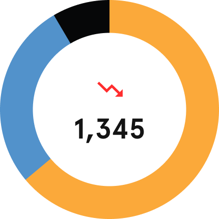
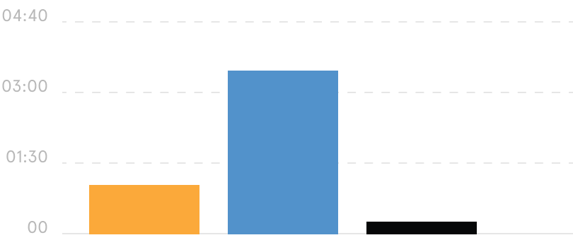
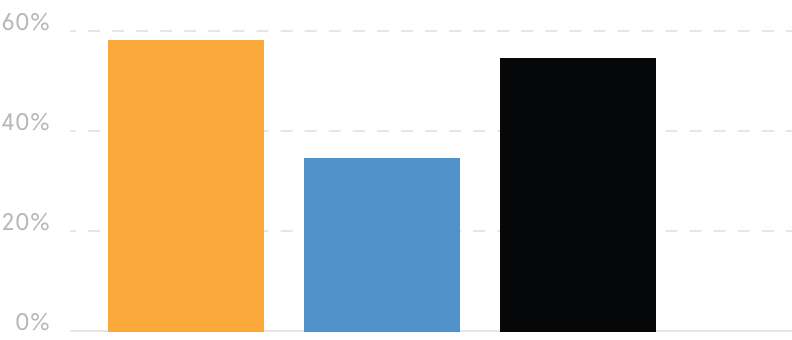
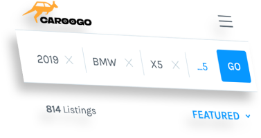
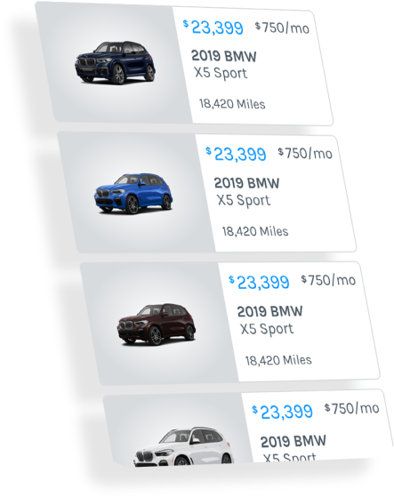
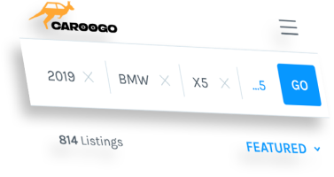
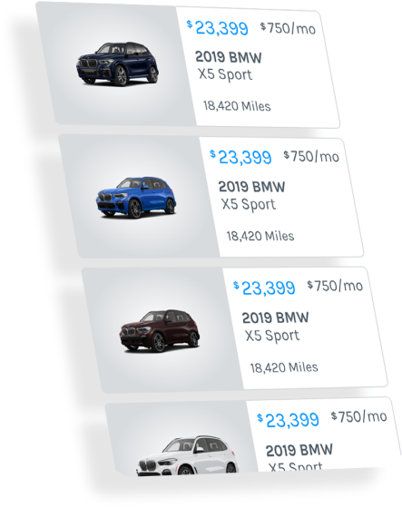

Design research is a customer-focused approach that helps you
answer questions like. User experience design is the process
design teams use to create products that provide meaningful and
relevant experiences to users.
Branding is what your business needs to break through the clutter and
grab your ideal customer’s attention.
Product design
Product designers work to optimize the user experience in the
solutions they make for their users—and help their brands by making
products sustainable for longer-term business needs.


Product designers work to optimize the user experience in the
solutions they make for their users—and help their brands by making
products sustainable for longer-term business needs.
Development
Is the work involved in developing a Web site for the Internet or an
intranet.
customer acquisition
Product designers work to optimize the user experience in the
solutions they make for their users—and help their brands by making
products sustainable for longer-term business needs.
Feature
Product designers work to optimize the user experience in the
solutions they make for their users—and help their brands by
making products sustainable for longer-term business needs.
Executive overview
Nov 1, 2020 - Nov 30, 2020
Active Users
1,099
-66.3%
Sessions
1,345
-69.0%
Avg. Session Duration
00:01:19
+80.0%
Bounce Rate
52.71%
-7.0%
Users

mobile
desktop
tablet
Sessions

mobile
desktop
tablet
Avg. Session Duration
80.0%

mobile
desktop
tablet
Bounce Rate
-7.0%

mobile
desktop
tablet
Caroogo
Find the car that fits your lifestyle. Car Buying, Made Awesome.
 


